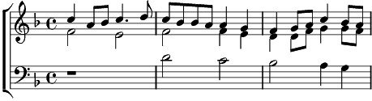

1. Nou nou nou et se perd
L'âme ténue, fredonnant ses prières,
Filant les cieux, solitaire.
L'air qu'il murmure trouve ses pères
Chante l'azur ô chante la terre !
Clame et susurre au creux de la clairière,
Pour les chansonniers d'hier
Dom dom dom ... 0 chien, ô loup
Troubadours des temps nouveaux, des temps nouveaux
Ne trouvez pas la bohème
Dom dom dom...
2. Nou nou nou, l'âme amère.
Lyre rompue que ternit la clairière,
Enduit son cœur de poussière.
Il n'est pas digne d'être un poète.
Ô chant du cygn', ô funeste quête
Brûle sa vigne en silence et se terre,
Bannit des nues, solitaire.
Dom dom dom ... Ô coche ô mouche
Laisse la souffler la muse, la chanson, la chanson
que les vents fredonnent
Dom dom dom...
3. Nou nou nou ... et légère.
Vivent repues cigales et prières,
Comm' les chansonniers d'hier.
Verbe qui plane dans la clairière,
Mânes joyeux dont les âmes chantent clair.